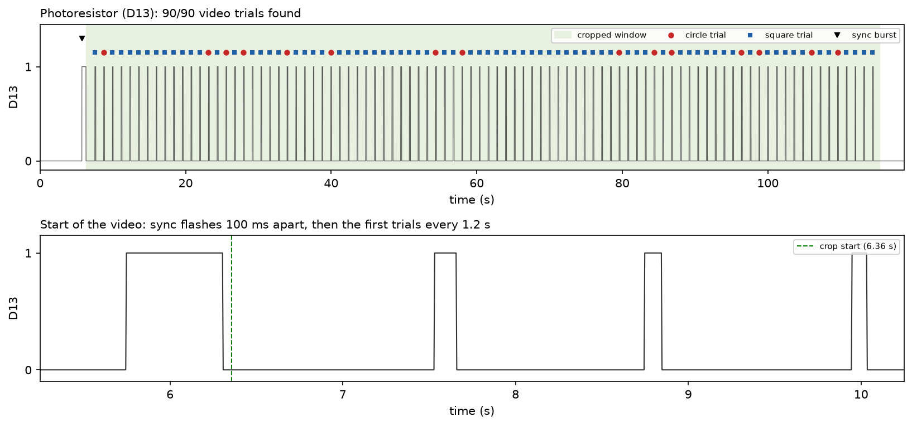
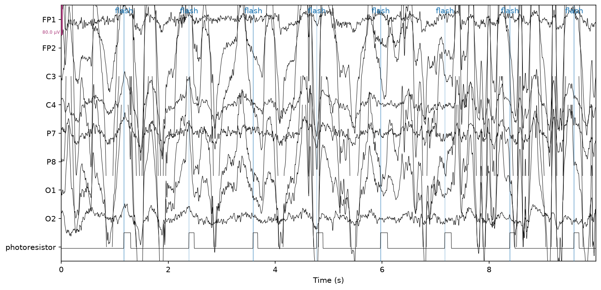
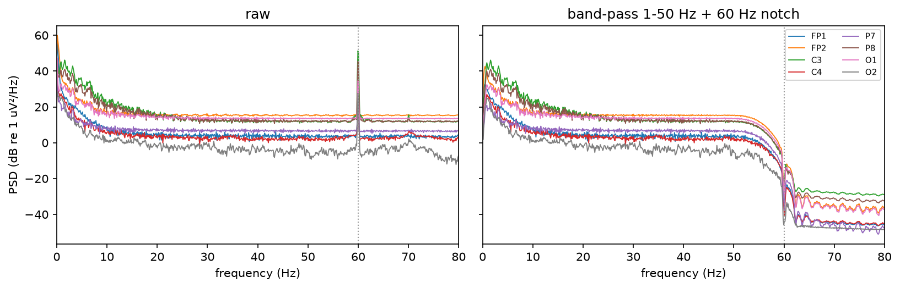
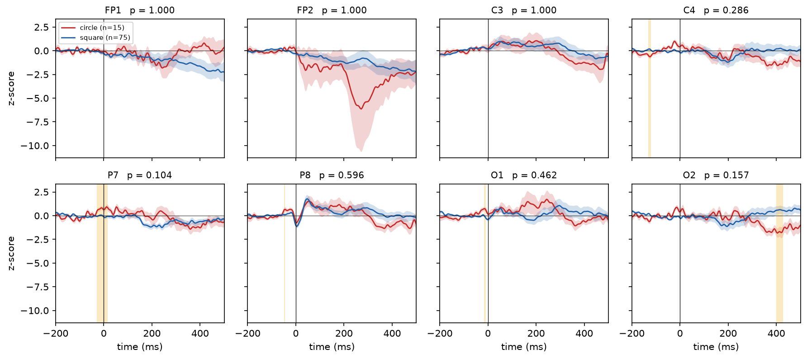
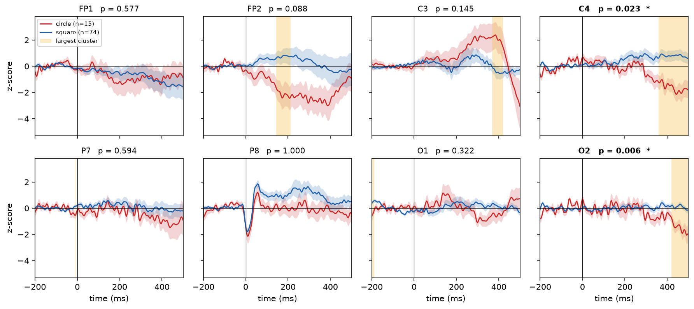
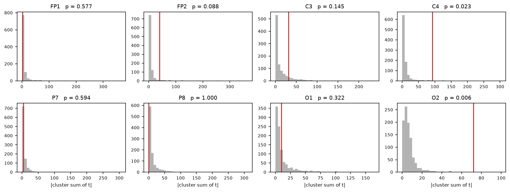
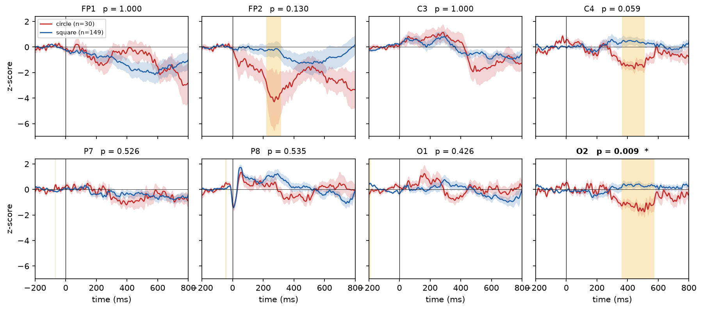

ECE441 · Lab 4 report · two runs of the oddball video, recordings {{runs.run1.recording}} and {{runs.run2.recording}}
One group member watched a video in which a red circle or a blue square appeared every 1.2 s, 90 times in total, and pressed a pushbutton as fast as possible whenever a red circle appeared while ignoring the squares. Only 15 of the 90 stimuli are circles, so the task is a visual oddball paradigm: rare, task-relevant targets among frequent non-targets. Both stimulus types should evoke early visual responses (P1/N1, roughly 100–200 ms) over the occipital cortex; rare targets that require a decision and a response are known to evoke, in addition, a late positivity, the P300, which is largest over the centro-parietal midline 300–600 ms after stimulus onset (Polich, 2007).
The goal was to record the EEG together with a stimulus marker, epoch it around the stimuli and decide, for each of the 8 electrodes, whether the response to circles differs from the response to squares by more than chance. Because the comparison is made at many time points at once, this requires a test that controls the false-alarm rate over all of them. We implemented the cluster-based nonparametric permutation test of Maris and Oostenveld (2007) as two functions (Section 3.5) and applied it to two runs of the experiment recorded in the lab, separately and pooled.
The problem. An EEG comparison between two conditions is made at every (sensor, time) pair, called a sample. Our epochs have {{runs.run1.main.n_times}} time points on 8 channels, i.e. {{runs.run1.main.n_tests}} samples. A t-test at every sample with α = 0.05 gives a family-wise false-alarm rate far above 5 % (the multiple comparisons problem, MCP): among hundreds of tests some “significant” samples are almost guaranteed even without any effect. The Bonferroni correction (α divided by the number of tests) controls the false-alarm rate but is very conservative, because neighbouring EEG samples are strongly correlated and are not independent tests.
The core idea. The paper solves the MCP with a permutation test. Under the null hypothesis the data of both conditions come from the same probability distribution, so the condition labels of the trials are exchangeable: assigning the trials to the two conditions at random produces data sets that are just as likely as the observed one. The procedure of Section 2.3 is: (1) pool the trials of both conditions; (2) draw at random as many trials as condition 1 had and call them subset 1, the rest subset 2 (a random partition); (3) compute the test statistic on this partition; (4) repeat many times (1000 in the paper) to build the permutation distribution; (5) the p-value is the proportion of random partitions whose statistic exceeds the observed one; (6) the conditions differ if p is below the critical α. The test is valid for any test statistic, and that freedom is what solves the MCP: one chooses a single statistic for the whole data structure, so only one comparison is made.
The cluster statistic. The statistic of Section 3.1.1 (single-sensor evoked responses) uses the prior knowledge that real ERP effects last tens of milliseconds, whereas noise produces isolated threshold crossings: (1) compute a t-value at every time sample; (2) keep the samples whose t exceeds a threshold (here the two-sided p < 0.05 critical value); (3) group adjacent selected samples into clusters, positive and negative t separately; (4) sum the t-values in each cluster (“cluster mass”); (5) take the largest cluster sum in absolute value. The sample threshold only shapes the clusters; the false-alarm rate is set by the permutation distribution. Because every random partition contributes its largest cluster, the final p-value controls the false-alarm rate over all time points of the channel. The p-value refers to the cluster as a whole, not to each of its samples.
How it relates to our experiment. Ours is the paper’s single-subject, between-trials design: the observations are trials (15 circles and about 75 squares per run), and under the null hypothesis that the brain responds identically to both stimuli the circle/square labels can be shuffled across trials. We use the single-sensor analysis of Section 3.1.1 for each of our 8 electrodes. The multi-sensor version (Section 3.1.2) also clusters over neighbouring sensors, which our sparse montage does not support well. The per-channel p-values therefore control errors over time within a channel but not across the 8 channels; we also report p-values corrected over channels with the maximum statistic over channels (Section 4.4 of the paper).
EEG was recorded with the OpenBCI Cyton board at {{runs.run1.sfreq}} Hz from FP1, FP2, C3, C4, P7, P8, O1 and O2. A photoresistor taped to the lower-left corner of the screen drove a comparator on the course PCB whose output went to the Cyton’s digital input D13 (GUI widget “Digital Read”): D13 reads 1 while that corner is bright. The video shows a white square there at the onset of every stimulus, so D13 marks each onset on the same clock as the EEG. The subject watched the whole video twice in the same session (the second run started about 1 min 50 s after the first ended) without removing the headset (run 1: {{runs.run1.recording}}, {{runs.run1.duration_s}} s; run 2: {{runs.run2.recording}}, {{runs.run2.duration_s}} s). The large electrode DC offsets are similar at the start of both files (e.g. FP2 62.2 and 60.6 mV), consistent with an unchanged electrode placement.
We measured the timing of Lab4_video.mp4 frame by frame (20 frames/s; script video_check.py): the video starts with 5 white flashes 100 ms apart, then presents 90 stimuli every 1.2 s, the first 1.8 s after the first flash. Each white marker lasts 50 ms; each stimulus (red circle or blue square on a grey rectangle) stays on screen for 0.9 s. The positions of the red circles in the video agree with circle_mask.csv for all 90 trials.
Each OpenBCI text file was read with pandas; the columns EXG Channel 0–7 were renamed FP1…O2 and the D13 column was renamed photoresistor. The manual places D13 in column Other.2, but in our files Other.2 is constant (1) and D13 is in {{runs.run1.photoresistor_column}} (same values as Analog Channel 1, 0/256); our loader checks which column toggles between two levels and found {{runs.run1.photoresistor_column}} in both runs. The data were transposed to MNE’s channels × samples convention, the EEG converted from µV to V (×10−6), and an mne.io.RawArray was created with channel types ‘eeg’ (8×) and ‘stim’ (photoresistor), with the sampling rate read from the file header. The packet counter shows no lost samples; it is reset once, 0.5 s after the stream starts, well before the video.
mne.find_events on the photoresistor channel gave the dark-to-bright transition of every detected pulse ({{runs.run1.n_onsets_total}} in run 1, {{runs.run2.n_onsets_total}} in run 2). They were converted to annotations with mne.annotations_from_events and attached with set_annotations. The recordings were band-pass filtered from 1 to 50 Hz (raw.filter(1, 50), MNE’s default zero-phase FIR filter; the stim channel is not filtered). This left a clear 60 Hz peak, because MNE’s default transition band for a 50 Hz low-pass extends to 62.5 Hz. Since the manual asks that no line noise remain, we added a 60 Hz notch filter (raw.notch_filter(60)), which removed it (Figure 4).
The photoresistor is slower than the screen: its pulses last a median of {{runs.run1.median_flash_ms}}–{{runs.run2.median_flash_ms}} ms instead of 50 ms, and the 5 sync flashes (100 ms apart, separated by 50 ms dark gaps) merged into a single long pulse in both runs (Figures 1 and 2). The manual expects “3 events that are nearly separated by 100ms” at the video start; we found 1. To identify the trials robustly we matched the detected onsets to the video’s timetable: each run of flashes was tried as the video start, the 90 trial onsets were predicted 1.8 s after it and every 1.2 s thereafter (tolerance ±0.15 s, the prediction re-fitted to the matches found so far to absorb clock drift), and the candidate followed by the most trials won. In run 1 all 90 trials were found; in run 2 the onset of trial {{MISSED_run2}} (a square) was not detected, so that epoch was left out together with its entry in the mask, keeping the labels of all other trials aligned. Following the manual, each recording was then cropped from 0.5 s after the video start to 1 s after the last video TTL; because the merged sync pulse was still high 0.5 s after the start, the crop begins 50 ms after that pulse ends (run 1: {{runs.run1.crop_start_s}}–{{runs.run1.crop_stop_s}} s; run 2: {{runs.run2.crop_start_s}}–{{runs.run2.crop_stop_s}} s). find_events on the cropped data returns {{runs.run1.n_events_in_crop}} and {{runs.run2.n_events_in_crop}} events, all of them trials.
Epochs were created with MNE’s default settings: −0.2 to 0.5 s around each onset, with baseline correction by the mean of −0.2 to 0 s. Indexing them with circle_mask.csv gave {{runs.run1.main.n_circles}} circle and {{runs.run1.main.n_squares}} square epochs in run 1 and {{runs.run2.main.n_circles}} and {{runs.run2.main.n_squares}} in run 2, exported to NumPy arrays of shape (epochs, 8 channels, {{runs.run1.main.n_times}} samples). Each epoch and channel was z-scored against its own baseline,
z = (x − μbaseline) / σbaseline,
with μ and σ the mean and standard deviation of the −200 to 0 ms samples, so that each trial is expressed in units of its own pre-stimulus fluctuation and trials or channels with larger amplitudes do not dominate.
nonparametric_test, Section 3.1.1). A two-sample t-test (scipy.stats.ttest_ind) at every channel and time sample, circles vs squares, gives t and p arrays of shape (8, {{runs.run1.main.n_times}}). For each channel, samples with p < 0.05 are grouped into clusters of adjacent samples with scipy.ndimage.label, positive and negative t separately; each cluster’s t-values are summed and the cluster with the largest absolute sum is returned with its location (0 if no sample is below 0.05).permutation_test, Section 2.3). Function 1 on the real data gives the observed statistic of each channel. The epochs of both conditions are pooled, shuffled and split into sets of the original sizes, and function 1 is applied to the partition; this is repeated {{n_permutations}} times (random seed {{seed}}). A channel’s p-value is the proportion of partitions whose largest |cluster sum| is at least the observed one. The test is two-sided, so a large cluster of either sign counts. The resolution of p is 1/{{n_permutations}}; p = 0 is reported as p < 0.001.mne.stats.permutation_cluster_test was run with the same threshold and statistic; over every channel and analysis its p-values differ from ours by at most {{MNE_MAX_DIFF}}.


Table 1. Synchronisation and data quality. SD: standard deviation of each channel in the cropped, filtered recording.
Both runs were synchronised without ambiguity: every detected onset after the sync pulse fits the 1.2 s grid, and the circles fall where circle_mask.csv places them (Figures 1 and 2). Filtering removed the slow drift and the mains line (Figure 4). Signal quality differs strongly between electrodes. C4, P7 and O2 have SDs of 17–36 µV, whereas C3, P8 and FP2 reach 100–240 µV with slow waves and bursts of high-frequency (likely muscle) activity (Figure 3), which points to poor electrode contact at those sites. FP2 also shows large positive blink deflections. P8 shows a sharp deflection that peaks 4 ms after every flash onset, in both conditions (Figures 5, 6 and 8). No visual response is that fast, so it is almost certainly non-neural, most likely electrical pick-up from the long D13/photoresistor jumpers running near that input. It is very similar for circles and squares and therefore largely cancels in the comparison, but it shows that the marker wiring couples into the EEG. The zero-phase filter also spreads such a sharp transient slightly backwards in time, which is the likely origin of the small “pre-stimulus” clusters at P7 and P8 in Table 2.


Table 2. Largest cluster per channel, −0.2 to 0.5 s epochs, {{n_permutations}} permutations. Σt: cluster sum of t (negative: circles below squares). p: function 2; in brackets: corrected over the 8 channels. Highlighted: p < 0.05. Channels with p < 0.05: run 1 {{SIG_run1_main}}; run 2 {{SIG_run2_main}}; pooled {{SIG_pooled_main}}.



Run 1 shows no significant difference on any channel (Figure 5; smallest p = {{runs.run1.main.channels.4.p_value}} at P7, for a cluster around stimulus onset that cannot be a response to the stimulus). The largest post-stimulus cluster is a short negativity for circles at O2 (400–428 ms, p = {{runs.run1.main.channels.7.p_value}}). On FP1, FP2 and C3 not a single sample reached p < 0.05. Run 2 shows significant clusters at O2 (420–500 ms, p = {{runs.run2.main.channels.7.p_value}}) and C4 (360–500 ms, p = {{runs.run2.main.channels.3.p_value}}), in both cases with circles more negative than squares, by {{runs.run2.main.channels.7.cluster_diff_uv}} µV and {{runs.run2.main.channels.3.cluster_diff_uv}} µV on average over the cluster (Figures 6 and 7). Pooled, the same two channels are significant with the same sign and timing: O2 360–500 ms, p = {{pooled.main.channels.7.p_value}}, {{pooled.main.channels.7.cluster_diff_uv}} µV; C4 364–500 ms, p = {{pooled.main.channels.3.p_value}}, {{pooled.main.channels.3.cluster_diff_uv}} µV (Figures 8, 9 and 11). After correction over the 8 channels no p-value is below 0.05 in any data set (smallest: {{runs.run2.main.channels.3.p_value_corrected}}, C4 in run 2).
Table 3. As Table 2 for −0.2 to 0.8 s epochs. Channels with p < 0.05: run 1 {{SIG_run1_extended}}; run 2 {{SIG_run2_extended}}; pooled {{SIG_pooled_extended}}.

With the longer window the O2 negativity extends to about 580 ms and becomes stronger (run 2: 420–580 ms, p < 0.001; pooled: 360–576 ms, p = {{pooled.extended.channels.7.p_value}}). In run 2, C3 also shows a late negative cluster (484–628 ms, p = {{runs.run2.extended.channels.2.p_value}}; Figure 13), but its mean difference of {{runs.run2.extended.channels.2.cluster_diff_uv}} µV is far larger than any ERP, C3 is the noisiest channel, and in the default window its largest cluster had the opposite sign. We therefore attribute it to a few large artefacts in the circle epochs rather than to a brain response. The pooled C4 cluster hardly changes but its p-value rises to {{pooled.extended.channels.3.p_value}}: a longer window gives the random partitions more chances to produce a large cluster, so the same observed cluster is less extreme. Run 1 remains without significant channels.
The one consistent finding is a late, sustained negativity for targets at O2 and C4, starting about 360 ms after stimulus onset and lasting into the 500–600 ms range, roughly 10–20 µV in size. It is significant in run 2; run 1 shows only a non-significant trend in the same direction at O2 (400–428 ms, p = {{runs.run1.main.channels.7.p_value}}) and no post-stimulus cluster at C4. The pooled data are significant as well, but they include run 2 and are not an independent replication: pooling makes the effect significant overall while it is driven mainly by run 2. The effect appears on two of the cleanest electrodes, which is expected: with 15 targets per run, an effect of this size can only be detected where the background noise is low.
We did not observe the textbook P300, a positivity for targets around 300–600 ms. There are several reasons, and our data cannot fully separate them:
Our data illustrate the multiple comparisons problem directly. In run 1, a plain t-test at every sample marks {{runs.run1.main.uncorrected_samples}} of {{runs.run1.main.n_tests}} samples as significant (p < 0.05), about the 70 expected by chance alone, in a run in which the permutation test detects no reliable effect. A sample-by-sample analysis would therefore “discover” effects in noise. The opposite correction is too strict: with Bonferroni (p < 0.05/{{runs.run1.main.n_tests}}) not a single sample survives in any of the default-window analyses, not even pooled, where {{pooled.main.uncorrected_samples}} samples reach p < 0.05 (in the longer window only run 2 keeps {{runs.run2.extended.bonferroni_samples}} of {{runs.run2.extended.n_tests}} samples). The cluster statistic sits in between. It ignores scattered, isolated crossings, which random partitions produce just as often, but it accumulates evidence over the 21–55 adjacent samples of the O2 and C4 clusters, and only random partitions that happen to produce an equally long and strong cluster count against it. This is the sensitivity gain that Maris and Oostenveld describe, obtained without giving up control of the false-alarm rate over time. Because the inference is about the cluster as a whole, the exact start and end of the clusters (e.g. 360 vs 420 ms) should not be over-interpreted.
The manual’s test is applied to each of the 8 channels separately. If no channel had any effect, the chance that at least one of them reaches p < 0.05 would be about 1 − 0.958 ≈ 34 % if the channels were independent (at most 8 × 5 % = 40 %). When each channel is compared with the distribution of the largest statistic over all 8 channels, none of our clusters remains below 0.05 (smallest corrected p = {{pooled.extended.channels.7.p_value_corrected}}, O2 pooled, long window). The target negativity at O2/C4 is therefore best described as a consistent but tentative effect: the agreement in direction and latency between run 2 and the trend in run 1 speaks for it, but both runs come from the same subject and session; the channel-wise correction and the small number of targets ask for a replication before it is taken as established.
We recorded two runs of a visual oddball task with a photoresistor marker, epoched {{pooled.main.n_epochs}} trials ({{pooled.main.n_circles}} targets) with MNE and compared targets with non-targets on each electrode using our own implementation of the cluster-based permutation test of Maris and Oostenveld (2007), which agrees with MNE’s implementation. Targets were accompanied by a sustained negativity relative to non-targets at O2 and C4 from about 360 ms on. It is significant in the second run and in the pooled data (O2 p = {{pooled.main.channels.7.p_value}}, C4 p = {{pooled.main.channels.3.p_value}}), only a non-significant trend in the same direction in the first run, and not significant after correcting over the 8 channels. A classic midline P300 could not be assessed with this montage, and the button press and stimulus differences are plausible contributors to the effect. The data also show why the cluster test is needed: an uncorrected sample-wise test finds as many “effects” as chance predicts in a run where the permutation test finds no reliable difference, while Bonferroni finds none in the default window even where the cluster test does.
Maris, E., & Oostenveld, R. (2007). Nonparametric statistical testing of EEG- and MEG-data. Journal of Neuroscience Methods, 164(1), 177–190. https://doi.org/10.1016/j.jneumeth.2007.03.024
Gramfort, A., et al. (2013). MEG and EEG data analysis with MNE-Python. Frontiers in Neuroscience, 7, 267. https://doi.org/10.3389/fnins.2013.00267
Polich, J. (2007). Updating P300: An integrative theory of P3a and P3b. Clinical Neurophysiology, 118(10), 2128–2148. https://doi.org/10.1016/j.clinph.2007.04.019
lab4_stats.py (functions 1 and 2){{CODE_STATS}}
lab4_analysis.py (pipeline)The figure code (lab4_plots.py), the synthetic test recording (lab4_synthetic.py) and the tests (test_lab4.py) are in the group repository.
{{CODE_ANALYSIS}}